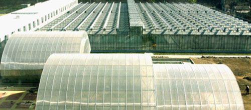

<!-- We don't need full layout here, because this page will be parsed with Ajax-->
<!-- Top Navbar-->
<div class="navbar">
  <div class="navbar-inner">
    <div class="left">
            <!-- Right link contains only icon - additional "icon-only" class-->
            <a href="#" class="link icon-only back show-menu"><i class="icon iconfont">&#xe615;</i></a>
          </div>
          <div class="center sliding">农科所</div>
  </div>
</div>
<div class="pages">
  <!-- Page, data-page contains page name-->
  <div data-page="menu3-2" class="page white-background">
    <div class="menur-box">
      <div class="menur-box-img"></div>
      <div class="menur-box-txt">
        <h2>农科所</h2>
        <p>用户可以享受由政府科研机构，如##省农科所提供的专业农业生产技术、信息。</p>
      </div>
    </div>
  </div>
</div>